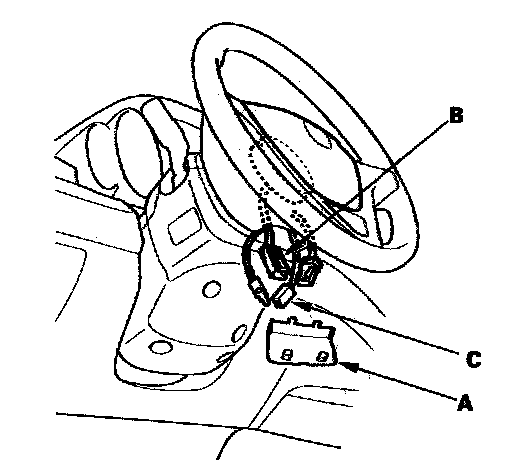
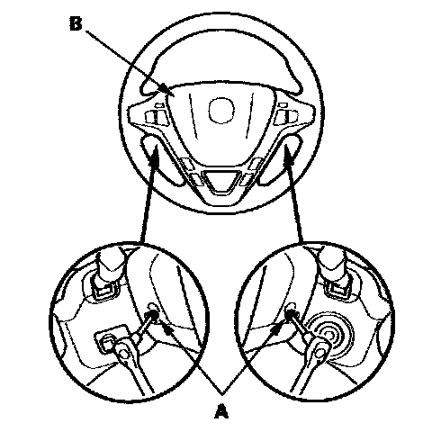
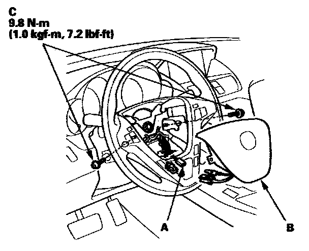
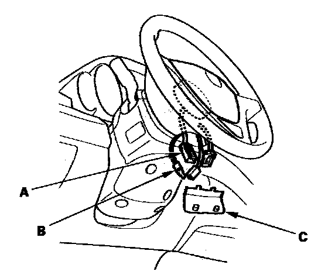

Driver's Airbag
Driver's Airbag ReplacementRemoval
1. Disconnect the negative cable from the battery and wait at least 3 minutes before beginning work.

2. Remove the access panel (A) from the steering wheel, then disconnect the driver's airbag 4P connector (B) and horn switch 1P connector (C) from the cable reel.

3. Using a TORX T30 bit, remove the two TORX bolts (A).
4. Remove the driver's airbag (B).
Installation

1. Connect the horn switch connector (1P) (A) to the driver's airbag (B).
2. Place the driver's airbag in the steering wheel, and secure it with new TORX bolts (C).

3. Connect the cable reel 4P connector (A) to the driver's airbag 4P connector and horn switch 1P connector (B), then install the access panel (C) on the steering wheel.
4. Connect the negative cable from the battery.
5. After installing the airbag, confirm proper system operation:
- Turn the ignition switch ON (II); the SRS indicator should come on for about 6 seconds and then go off.
- Make sure the horn works.